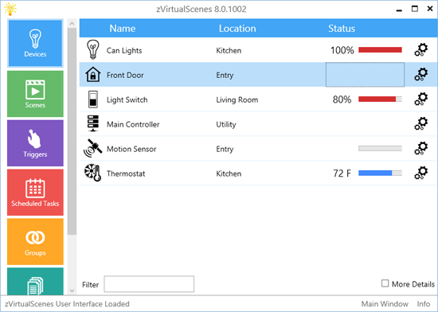

zVirtualScenes 8.0 is comming soon...

Project Overview
zVirtualScenes is a software-based ZWave Scene Controller where you can create custom ZWave scenes to be played back via GUI, HTTP Commands or Smartphone.
- Take Full control of your ZWave Compatible Device in a simple GUI interface.
- Control your ZWave devices from your smart phone (Android and IPhone).
- ZVirtualScenes monitors your ZWave devices for state changes and can send notifications to Jabber/Google Talk. For example, get notified via Instant Message if the temperature drops below a customizable limit. Get notified when a switch level changes or a thermostat is turned on.
- Easily create custom scenes controlling thermostats, switches and more in one simple action. Activate them via your Smartphone, HTTP or GUI.
- Use zVirtualScenes Mobile a full HTML5/JS based Sencha mobile application to take full control of your devices from anywhere.
- Using the Web API Plug-in you can interact with nearly every aspect of zVirtualScenes using a RESTful API. Create scenes, rename devices, execute commands, etc..
- Fully tested with Trane ZWave Remote Energy Management Thermostat.
- zVirtualScenes has a plug-in system with a full API. Developers can easily create custom plug-ins in Visual C#.
Native Mobile Apps

Getting Started
- Download and install the latest zVirtualScenes installer here
- If you plan on using the HTTP Web API plug-in, run zvs as Administrator otherwise run as a standard user account
- Double-click the ZVS ICON in the task bar to open the main user interface
- Click the settings tile in the main menu and select: Tools --> Manager Adapters...
- Select the adapter called "OpenZWave Adapter for ZVS"
- Enter your COM port your USB compatible z-stick is running on in the COM port box
- Check the enable plugin check box
- Click done to close the Adapter Manager window
- You should now start to see your devices appear on the main window devices tab. You can double click on the devices to edit settings and run commands.
- Please note, until the device is initially queried, you will not be able to issue commands.
- Click the log tile and review the log in order to help debug any problems